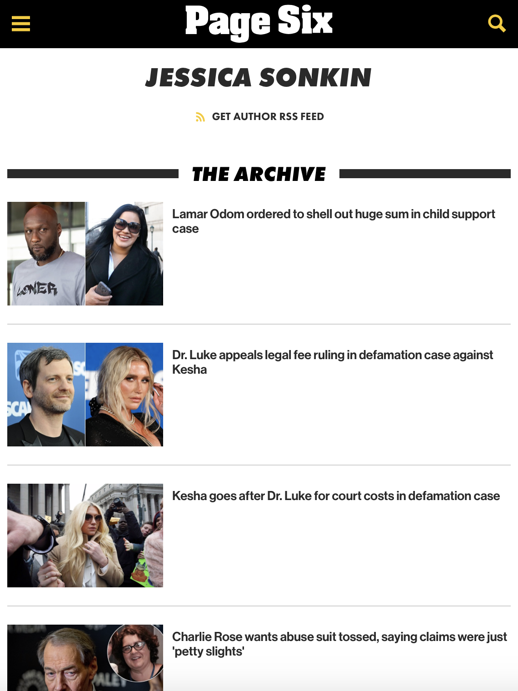

Click here to visit my archive on the Page Six website.
While working for the New York post, I was provided the platform to bolster knowledge of city courts — inclusive of lawsuits, hearings and a wide range of miscellaneous cases. Click the link above to read my Page Six archive, featuring celebrity and entertainment industry related news.
Click here to return to home page.